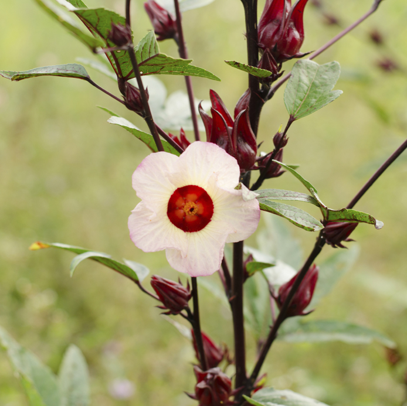

La Roselle, le rubis de la cuisine
Alors que nous admirons souvent l’hibiscus pour son allure ornementale, la Roselle se distingue par son rôle de « plante aux mille vertus ». Originaire d'Afrique de l'Ouest, elle a conquis tous les continents. Ses fleurs, d'un jaune pâle au cœur pourpre, ne s'ouvrent que quelques heures, mais elles laissent place à un calice rouge éclatant qui devient, une fois séché, un ingrédient précieux. On la connaît sous de nombreux noms : Bissap au Sénégal, Karkadé en Égypte, ou encore Oseille de Guinée. Sa couleur rubis et son goût proche de la canneberge en font la base de boissons rafraîchissantes et de confitures exquises.
Une alliée pour le bien-être
La Roselle n'est pas seulement délicieuse, elle est aussi une alliée précieuse pour la santé :